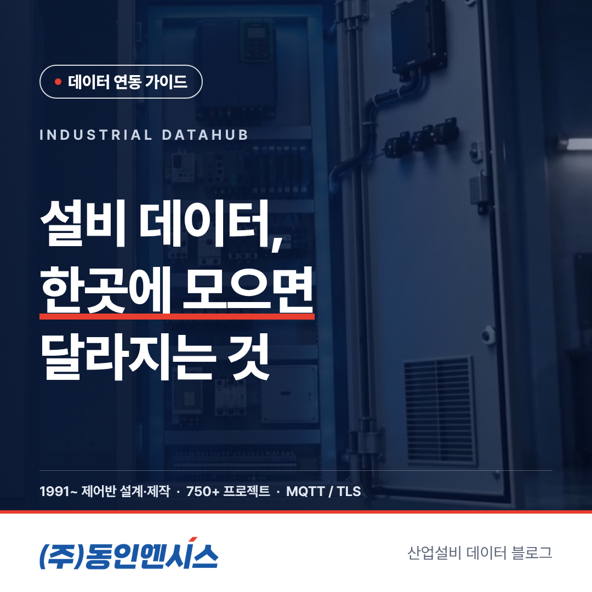
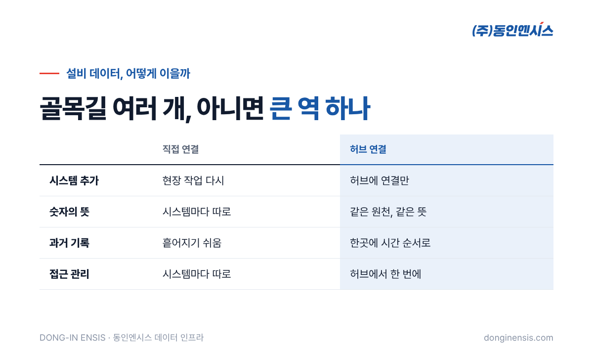
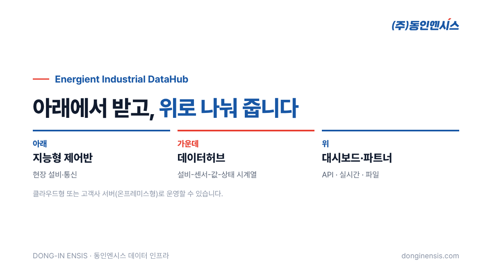

공장에 설비 데이터를 쓰는 시스템이 하나일 때는 고민할 것이 별로 없습니다. 설비에서 그 시스템 하나로 바로 보내면 됩니다. 그런데 시간이 지나면 데이터를 원하는 곳이 늘어납니다. 생산관리 시스템이 원하고, 에너지 관리 화면이 원하고, AI 분석 회사가 원하고, 본사 보고서도 원합니다. 바로 이때부터 '어떻게 연결할 것인가'가 중요한 문제가 됩니다. 부산에서 30년 넘게 제어반을 설계·제작하며, 지금은 그 제어반에서 나온 데이터를 모아 나눠 주는 일까지 맡고 있는 동인엔시스가, 설비마다 직접 잇는 방식과 산업 데이터허브로 한곳에 모으는 방식을 비교해 보겠습니다.
그림으로 그려 보면 차이가 분명합니다. 도로에 비유하면 직접 연결은 집집마다 따로 낸 골목길이고, 허브 연결은 모든 길이 모이는 큰 역입니다. 직접 연결은 설비와 시스템 사이에 선이 거미줄처럼 늘어나고, 허브 연결은 모든 선이 가운데 한 점을 거칩니다.

직접 연결에서는 새 시스템이 생길 때마다 현장 쪽 작업이 다시 필요합니다. 설비 열 대에 시스템이 세 개라면 길이 서른 개가 되고, 시스템이 하나 더 늘면 열 개가 또 생깁니다. 현장 장비가 여러 곳으로 데이터를 동시에 보내야 하니 부담도 커집니다.
허브 연결에서는 현장 쪽은 허브 한 곳으로만 보내면 됩니다. 현장 장비는 늘 같은 일을 하고, 바뀌는 것은 허브 뒤편뿐입니다. 새 시스템은 허브에 연결해 필요한 데이터를 가져가면 되므로, 현장 설비나 제어반을 다시 손볼 필요가 없습니다. 데이터를 쓰는 쪽이 아무리 늘어나도 현장은 조용합니다.
직접 연결에서는 시스템마다 데이터를 받아 각자 정리합니다. 같은 베어링 온도라도 한 시스템은 1분 평균으로, 다른 시스템은 순간값으로 저장할 수 있고, 이름과 단위를 다르게 붙이기도 합니다. 그러다 보면 회의 자리에서 "화면마다 숫자가 다르다"는 이야기가 나옵니다. 어느 숫자가 맞는지 따지는 데 시간을 쓰다 보면, 정작 설비를 어떻게 할지에 대한 이야기는 뒤로 밀립니다.
허브 연결에서는 모두가 허브에 저장된 같은 기록을 봅니다. 동인엔시스의 데이터허브는 설비 데이터를 '설비-센서-실시간값-상태' 구조의 시계열로 저장하므로, 생산관리 화면과 AI 분석과 보고서가 같은 원천에서 출발합니다. 숫자의 뜻을 맞추는 일을 시스템마다 반복하지 않아도 됩니다.
직접 연결은 대개 '지금 값'을 넘기는 데 초점이 있습니다. 지난 기록은 각 시스템이 저마다 저장한 만큼만 남고, 어떤 시스템은 아예 남기지 않기도 합니다. 나중에 AI 분석을 하려고 보니 과거 데이터가 시스템마다 흩어져 있거나 비어 있는 일이 생깁니다.
허브 연결에서는 기록이 한곳에 시간 순서대로 쌓입니다. 새로 들어온 분석 회사도 허브에 쌓인 과거 기록부터 볼 수 있으니, 출발이 빨라집니다. 몇 달 치 기록이 이미 같은 형식으로 정리되어 있다면, 데이터를 모으느라 프로젝트 초반을 보내는 일이 줄어듭니다. 통신이 잠시 끊겼던 구간도 제어반이 보관했다가 다시 보낸 값으로 채워지고, 측정 시각과 순번이 함께 남아 빈 구간과 겹친 구간을 가려낼 수 있습니다.
Photorealistic photo of a small clean server room in a Korean company: two rows of black server racks with blue and green status LEDs, cable management trays overhead, cool lighting, polished floor, no people, no brand logos, no readable text. 3:2 landscape.
직접 연결에서는 권한 관리가 시스템마다 흩어집니다. 어떤 협력사가 어떤 설비의 데이터를 받고 있는지 한눈에 파악하기 어렵습니다. 협력 관계가 끝난 회사에 데이터가 계속 흘러가고 있어도 알아채기 어려운 구조입니다.
허브 연결에서는 허브가 관문 역할을 합니다. 어느 파트너가 어떤 데이터에 접근하는지를 한곳에서 정할 수 있어, 데이터의 이용 범위를 관리하기가 수월합니다. 누가 어떤 데이터를 어디까지 쓸 수 있는지는 프로젝트를 시작할 때 계약에 적어 두는데, 허브 구조는 종이 위의 그 약속을 실제 시스템에서 지키기 쉽게 만들어 줍니다.
| 구분 | 직접 연결 | 허브 연결 |
|---|---|---|
| 시스템 추가 | 현장 작업 다시 필요 | 허브에 연결만 |
| 숫자의 뜻 | 시스템마다 따로 정리 | 같은 원천, 같은 뜻 |
| 과거 기록 | 흩어지거나 비기 쉬움 | 한곳에 시간 순서로 |
| 접근 관리 | 시스템마다 따로 | 허브에서 한 번에 |
| 잘 맞는 곳 | 시스템 하나, 설비 몇 대 | 시스템과 파트너가 늘어날 곳 |
동인엔시스의 데이터 솔루션은 다섯 단계로 짜여 있습니다. 현장 설비, 산업 통신 연결, 데이터 통합관리, 웹 모니터링, AI·디지털트윈입니다. 산업 데이터허브는 이 가운데 세 번째, 데이터 통합관리를 맡습니다. 이름은 Energient Industrial DataHub입니다. 아래로는 지능형 제어반과 현장 통신에서 데이터를 받고, 위로는 웹 대시보드와 파트너 시스템에 데이터를 건넵니다.
허브에서 데이터를 꺼내는 문은 세 가지입니다. 필요할 때 묻고 답을 받는 API, 값이 바뀔 때마다 밀어 주는 실시간 연결, 그리고 기간을 골라 받는 파일입니다. 파트너는 자기 시스템의 성격에 맞는 문을 고르면 됩니다. 데이터를 외부로 보내기 어려운 현장이라면 고객사 서버와 사내망 안에 두는 온프레미스형으로 운영할 수도 있습니다. 허브의 위치가 클라우드든 사내든, 모아서 나눠 준다는 구조는 같습니다.

Photorealistic photo of a Korean open office with three people at separate desks, each monitor showing a different abstract dashboard (charts, tables, a factory layout) in the same color scheme (no readable text), natural daylight, documentary style, no brand logos, no readable text. 3:2 landscape.
Q. 산업 데이터허브가 꼭 필요한가요? 데이터를 쓰는 시스템이 하나이고 설비가 몇 대뿐이라면 직접 연결로도 충분할 수 있습니다. 규모가 작을 때는 단순한 구조가 오히려 관리하기 편합니다. 시스템이나 파트너가 늘어날 계획이 있다면 처음부터 허브 구조를 고려하는 편이 나중에 덜 고칩니다.
Q. 기존에 쓰던 시스템도 허브에 연결할 수 있나요? REST API와 WebSocket으로 데이터를 받을 수 있는 시스템이라면 연결을 검토할 수 있습니다. 구체적인 연결 방법과 범위는 기술 미팅에서 함께 확인합니다.
Q. 허브에 쌓인 데이터는 누구 것인가요? 허브에 쌓인다고 해서 주인이 바뀌지는 않습니다. 소유권과 쓰임의 범위, 얼마나 오래 둘지는 프로젝트를 시작할 때 계약으로 정해 둡니다.
공장에서 데이터를 원하는 곳은 앞으로 점점 더 늘어날 것입니다. 그때마다 현장에서 새 길을 내기보다, 한곳에 모아 두고 필요한 만큼 나눠 주는 구조가 오래갑니다. 산업 데이터허브는 그 중심을 만드는 일입니다.
문의 051-862-3668 · dongin@donginmne.com
아래 질문 중 하나에 실제 경험으로 답해 본문 적당한 곳에 넣어 주세요. 사람이 직접 쓴 문장이 들어가면 네이버에서 저품질 위험이 줄고 노출에 도움이 됩니다.